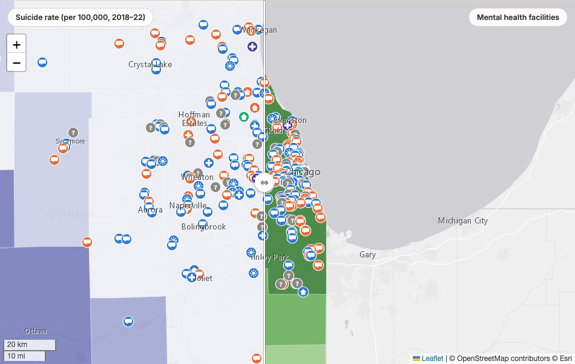

Illinois Mental Health Map
County-level need swiped directly against where mental health facilities actually are, across all 102 Illinois counties.

I volunteer with NAMI DuPage, and mental health access is personal to me. Kaiser Family Foundation publishes excellent state-level mental health data, but state averages hide exactly the gaps that matter most. So I pulled the same federal data KFF draws from, at the county level, and built a way to see need and access at the same time instead of one at a time.
Need on one side, supply on the other
One map, one swipe divider. Drag it and the left side shows suicide rate, frequent mental distress, or uninsured rate, ranked into quantiles across all 102 counties. The right side shows how many SAMHSA-listed mental health facilities serve each county. Facility icons stay visible on both sides, so a cluster of hospital and clinic icons can be read directly against whichever need metric is showing, not just against the facility map alone.
All 11 facility types, not folded into three
SAMHSA's own facility-type field has 11 distinct categories in Illinois. Rather than collapsing them into a handful of colors, each marker's icon encodes level of care, a real clinical hierarchy from outpatient through day treatment, residential, and hospital care, and color distinguishes the specific subtype within it. A colorblind viewer can still place any facility in its level of care from the icon alone.
25 of Illinois's 102 counties have zero SAMHSA-listed mental health facility within their borders. Menard County has the highest pooled suicide rate in the state and no listed facility of its own, though its confidence interval is wide enough that it isn't statistically distinguishable from several other counties. That uncertainty is part of the finding, not a footnote: every estimate on the map carries its 95% confidence interval, and the page is upfront about exactly what SAMHSA's directory does and doesn't capture.
Since this touches suicide data directly, a 988 Suicide & Crisis Lifeline note sits at the top of the page, not buried at the bottom.
Drag the divider, pick a need metric, or search your own ZIP code.
View the map (opens in a new tab) View the code (opens in a new tab)Let's talk about a job, a project, or both.
I'm open to full-time GIS Analyst roles and freelance/consulting work.